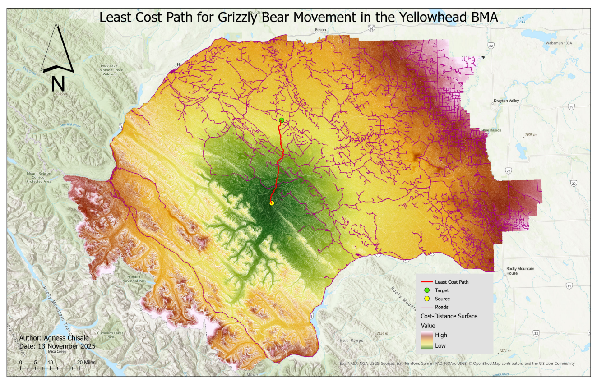

This project models Grizzly Bear movement across the Yellowhead Bear Management Area (BMA) in the Rocky Mountain foothills of western Alberta, Canada. Using raster analysis tools in GDAL, QGIS, and ArcGIS Pro, a cost surface was built from terrain, land cover, and road proximity data. A least cost path was then derived to identify the most feasible movement corridor between core and secondary Grizzly Bear habitat.
| Layer | Description | Source |
|---|---|---|
grizzlybearmanagementareas | Grizzly Bear population units / BMAs in Alberta | Alberta Open Government License via UBC PostgreSQL |
astgtmv003 (14 tiles) | ASTER Digital Elevation Models | NASA Earth Science Data Systems via UBC PostgreSQL |
ca_forest_vlce2_2019 | National land cover dataset for Canada (2019) | UBC PostgreSQL Server |
yellowhead_roads | Road network within the Yellowhead BMA | UBC PostgreSQL Server |
grizzly_bear_core_access_management_area | Core Grizzly Bear habitat polygons | UBC PostgreSQL Server |
grizzly_bear_secondary_access_management_area | Secondary Grizzly Bear habitat polygons | UBC PostgreSQL Server |
| Tool | Purpose |
|---|---|
GDAL (gdal_rasterize, gdalwarp) | Raster creation, reprojection, and clipping |
| QGIS | Raster calculations, slope derivation, proximity analysis |
| ArcGIS Pro | Distance accumulation and least cost path analysis |
| Python (QGIS console) | Setting PostgreSQL environment variables |
The Yellowhead BMA boundary was rasterized at 20 m resolution to define the area of interest. ASTER DEM tiles were mosaicked and reprojected to NAD83 UTM Zone 11N, then clipped to the AOI. Three cost layers were derived — normalized slope, reclassified land cover, and inverse distance to roads — and combined into a single weighted cost surface. A least cost path was then traced in ArcGIS Pro from the centroid of core Grizzly Bear habitat to a randomly selected point in the secondary habitat zone.

Map showing the least cost path overlaid on the cost-distance surface, roads, and terrain across the Yellowhead Bear Management Area
gdal_rasterize)gdalwarp